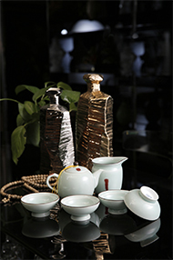
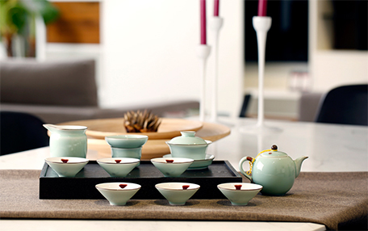

怡
为束氏茶道之基础，即修身、怡情、养心。
人们以茶悟道，从而怡然自乐，得到人生境界之升华，生活质量之提升。
在当下高压力、快节奏的工作环境下，我们更需要适时地放慢脚步去沉思，
而茶道文化所倡导“快节奏，慢生活”的健康生活方式以及它独有的悠远、深邃、高雅的艺术氛围引导着我们用更良好的心态投入到工作中。
和
为束氏茶道之精髓，即以和为贵、以茶交友，以茶待客。
越来越多的人开始在现代商务会友中走下酒桌,不再把酒言欢,继而走上茶桌，茶道论商，感受茶道文化所营造的更具品质与内涵的社交氛围。
束氏用尊荣御制的服务与高品质的茶道商品为有缘人提供臻品之选、为茶道爱好者分享传世之作。
束氏茶道所具有的人性化、国际化、专业化、系统化的特点是商务会谈、朋友交流，亲人欢聚的捷径。
“品茗、会友、论商”这正是束氏始终孜孜以求的品牌理念之一。
真
为束氏茶道之本原，即返璞归真，真诚待人。
“束氏茶道”品牌主张 “贵族的品味，亲民的价格”将使您能真正享受到物超所值的产品与服务。
束氏以海纳百川的胸怀创建一个汇聚各路商业精英、以茶会友的平台，合作共赢，创新分享与束氏茶道共同实现中国梦。